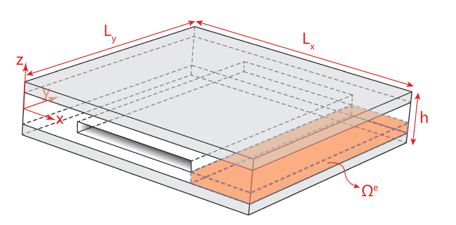

Layerwise spectral element method with frequency-dependent material identification for band-gap analysis in periodic polymeric sandwich structures
Composite Structures, 402, pp.121117, 2027. Journal paper

Abstract
Accurate band-gap prediction in additively manufactured polymeric sandwich structures with core cut-outs requires both efficient treatment of locally disconnected layers and realistic representation of polymer viscoelasticity. To address the former, this study develops a new layerwise spectral element method (LW-SEM) combining spectral Chebyshev discretization, layerwise first-order shear deformation kinematics, Bloch–Floquet periodicity, and pointwise transformation-based coupling. The formulation enforces inter-layer continuity while accommodating cut-out-induced disconnections without artificial void properties. To address the latter, an identification strategy based on experimental frequency response functions (FRFs) updates dynamic mechanical analysis (DMA)-derived properties into frequency-dependent storage modulus and loss factor functions. The framework is applied to polylactic acid-thermoplastic polyurethane (PLA-TPU) sandwich beams. PLA properties are calibrated using a single-material beam, while TPU properties are identified from a baseline sandwich beam through modal strain–energy partitioning. Compared with three-dimensional finite element method (FEM) results, LW-SEM reproduces natural frequencies, mode shapes, and dispersion curves with substantially fewer degrees-of-freedom (DOFs). Without further adjustment, the identified effective properties reduce the mean error relative to the measured resonances of beams containing one, three, and five periodic cells from 12.7% to 1.9%. The efficiency of LW-SEM is particularly advantageous for iterative dispersion analysis with frequency-dependent properties, where repeated high-DOF FEM solutions can become computationally prohibitive.